写真が、仕事に使えるデザインに変わる ChatGPT イラスト活用プロンプト集
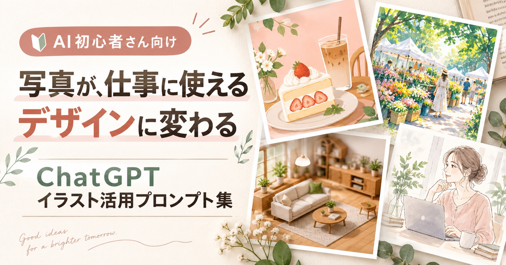
何気なく撮った写真も、ChatGPTを使えば、イラストやポスター、イベント告知、ホームページ、ブログ素材へ展開できます。
この特典では、写真を4つの異なるテイストのイラストへ変換するプロンプトと、完成したイラストを実際のデザインに活用するプロンプトをまとめました。デザイン経験がなくても大丈夫。使いたいプロンプトをコピーして、自分の写真と一緒にChatGPTへ送るだけです。
このページの作品例に登場する店舗名・イベント名・ブランド名・会社名は、すべて制作例のために作成した架空のものです。
目次を見るこの特典でできること
-
手元の写真を、4つの異なるテイストのイラストに変換できる
-
完成したイラストを、ポスター・フライヤー・ホームページ・ブログ素材に展開できる
-
コピペで使えるプロンプトなので、専門知識がなくても再現できる
-
「どこを書き換えるか」が分かるので、自分の写真・用途にすぐ応用できる
使い方はかんたん3ステップ
STEP 1
写真をChatGPTへアップロード
STEP 2
「完全おまかせ版」または「カスタマイズ版」を選んでコピー
STEP 3
写真と一緒にプロンプトを送信
迷ったら、入力不要の「完全おまかせ版」がおすすめです。
色や雰囲気などを指定したい場合だけ「カスタマイズ版」を使ってください。
最初に写真をイラストへ変換し、完成したイラストを使ってポスターなどを作ります。
一度に全部作らず、2回に分けて生成するのがポイントです。
01
カフェや飲食店に
やさしいフラットイラスト
ケーキやドリンクなどの商品写真を、温かみのある手描き風のフラットイラストへ。 完成したイラストは、季節限定メニューや店内ポスターなどに活用できます。
元の写真
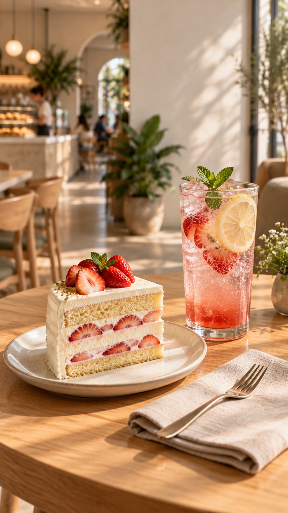
イラストに変換
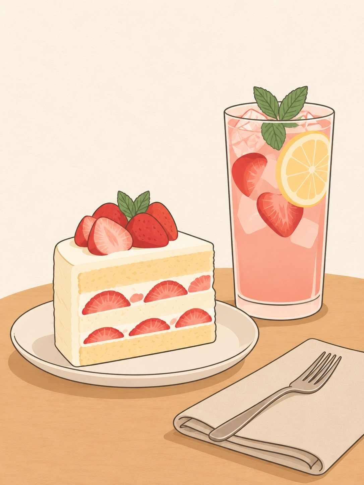
デザインに活用
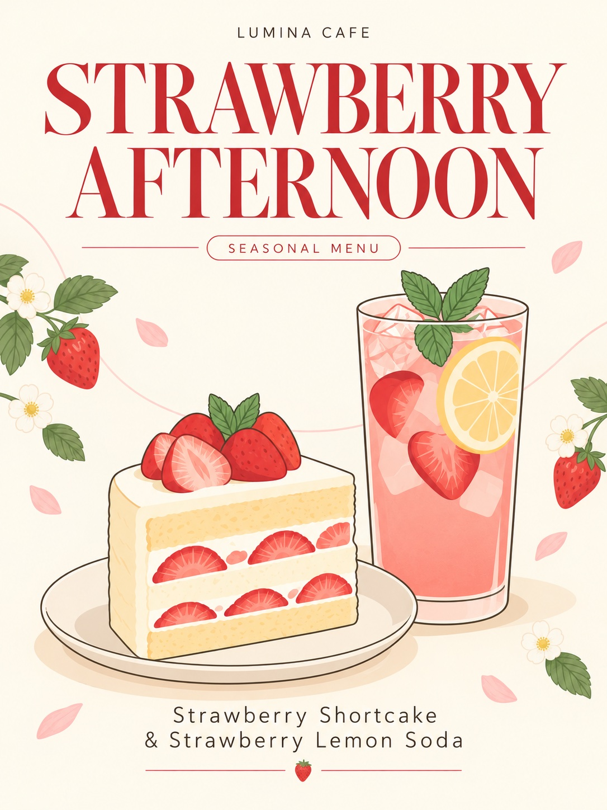
STEP A写真をフラットイラストにする
使い方を選んでください
とにかく簡単に試したい方 → 完全おまかせ版
色や雰囲気などを自分で決めたい方 → カスタマイズ版
迷ったらこちら
完全おまかせ版
画像と一緒に、そのまま送るだけ
アップロードした写真を、写真らしさを残さない「温かみのある手描き風のフラットイラスト」へ変換してください。 写真の主役、構図、色、雰囲気、残すべき要素を分析し、使いやすいイラスト素材になるよう判断してください。 利用者への質問や確認は行わず、そのまま制作を開始してください。 【最重要事項】 元写真へ絵画風のフィルターをかけるのではなく、写真に写っている内容を、単純化した線と平面的な色面で一から描き起こしてください。 写真の光沢、反射、ぼけ、細かな陰影、立体的な質感、写実的な描写は残さないでください。 【作成ルール】 ・主な被写体の種類、個数、形、色、位置関係を可能な限り維持する ・被写体の輪郭を、細く均一な手描き線で表現する ・写真の色を4〜8色程度に整理する ・グラデーションを使わず、平面的な色面で塗り分ける ・陰影は最小限にし、必要な場合も1段階のシンプルな影だけを使う ・ガラス、氷、金属、液体も写実的に描かず、単純な形と色で表現する ・透明なものも透明感や反射を再現せず、2〜3色の面で記号的に表現する ・背景は細部を省略し、大きな色面やシンプルな図形として再構成する ・被写体がひと目で分かる、余白のある洗練された構図にする ・海外のカフェやライフスタイルブランドの挿絵のような、上品で現代的な仕上がりにする ・わずかに不揃いな線や控えめな紙の質感を加え、手描きの温かみを出す ・商品、人物、小物を勝手に追加または削除しない ・文字、ロゴ、署名、透かしは入れない ・後から文字やレイアウトを追加できる、イラスト素材単体として出力する 【避ける表現】 ・写真にフィルターをかけただけの仕上がり ・元写真に近い写実的な描写 ・写真のような光沢、反射、透明感 ・背景のぼけや被写界深度 ・写実的な水彩画 ・油絵、厚塗り、デジタルペインティング ・細かな陰影やハイライト ・3D、CG、商品レンダリング ・複雑なグラデーション ・アニメ風、漫画風 ・過剰な装飾
好みに合わせたい方へ
カスタマイズ版
希望する項目だけ入力すればOK
すべての項目を埋める必要はありません。空欄の項目は、ChatGPTが画像の内容から判断します。
アップロードした写真を、写真らしさを残さない「温かみのある手描き風のフラットイラスト」へ変換してください。 【入力項目】 使用目的： （例：カフェのメニュー／SNS投稿／チラシ／ホームページ素材） 希望する雰囲気： （例：明るい／上品／親しみやすい／ナチュラル／レトロ） 希望する配色： （例：淡いピンクとアイボリー／鮮やかな暖色／写真から抽出／おまかせ） 残したい要素： （例：メインの被写体／人物／商品／花／小物／現在の配置） 背景： （残す／簡略化／単色／削除／おまかせ） 画像比率： （例：縦4:5／正方形1:1／横16:9／元画像と同じ） 未入力の項目は、アップロードした写真の内容と使用目的から判断してください。 入力内容について利用者へ確認せず、そのまま制作を開始してください。 【最重要事項】 元写真へ絵画風のフィルターをかけるのではなく、写真に写っている内容を、単純化した線と平面的な色面で一から描き起こしてください。 写真の光沢、反射、ぼけ、細かな陰影、立体的な質感、写実的な描写は残さないでください。 【作成ルール】 ・主な被写体の種類、個数、形、色、位置関係を可能な限り維持する ・被写体の輪郭を、細く均一な手描き線で表現する ・写真の色を4〜8色程度に整理する ・グラデーションを使わず、平面的な色面で塗り分ける ・陰影は最小限にし、必要な場合も1段階のシンプルな影だけを使う ・ガラス、氷、金属、液体も写実的に描かず、単純な形と色で表現する ・透明なものも透明感や反射を再現せず、2〜3色の面で記号的に表現する ・背景は細部を省略し、大きな色面やシンプルな図形として再構成する ・被写体がひと目で分かる、余白のある洗練された構図にする ・海外のカフェやライフスタイルブランドの挿絵のような、上品で現代的な仕上がりにする ・わずかに不揃いな線や控えめな紙の質感を加え、手描きの温かみを出す ・商品、人物、小物を勝手に追加または削除しない ・文字、ロゴ、署名、透かしは入れない ・後から文字やレイアウトを追加できる、イラスト素材単体として出力する 【避ける表現】 ・写真にフィルターをかけただけの仕上がり ・元写真に近い写実的な描写 ・写真のような光沢、反射、透明感 ・背景のぼけや被写界深度 ・写実的な水彩画 ・油絵、厚塗り、デジタルペインティング ・細かな陰影やハイライト ・3D、CG、商品レンダリング ・複雑なグラデーション ・アニメ風、漫画風 ・過剰な装飾
STEP Bイラストをポスターにする
使い方を選んでください
とにかく簡単に試したい方 → 完全おまかせ版
色や雰囲気などを自分で決めたい方 → カスタマイズ版
迷ったらこちら
完全おまかせ版
画像と一緒に、そのまま送るだけ
アップロードしたイラストをメインビジュアルとして使用し、内容と用途に合った高品質な広告ポスターを作成してください。 アップロードしたイラストの内容、色、雰囲気、想定される用途を分析し、最も適したデザイン、構図、タイトル、短いコピー、架空の名称を作成してください。 文字数はできるだけ少なくしてください。 実在する企業、店舗、イベント、ブランドと混同されない架空の内容にしてください。 利用者への質問や確認は行わず、そのまま制作を開始してください。 ・AIがイラストの内容に合う用途を判断する ・短いタイトル、サブタイトル、架空のブランド名または店舗名を作成する ・日付、価格、住所、電話番号は作成しない 【作成ルール】 元イラストの主役、形、色、配置、輪郭線、描画テイストを可能な限り維持してください。 元画像を四角い枠のまま貼り付けず、背景、余白、文字と自然に統合してください。 主役を大きく見せ、タイトル、ビジュアル、補足情報へ自然に視線が流れる構成にしてください。 イラストから代表色を抽出し、背景や文字色へ使用してください。 海外のデザインスタジオやライフスタイルブランドの広告を思わせる、上品で現代的なエディトリアルデザインにしてください。 写真風、3D風、過剰な装飾、チラシ風の派手な配色、意味不明な文字、実在ロゴ、透かし、壁や額縁のモックアップは避けてください。 ポスター単体を正面から見た状態で出力してください。
完全おまかせ版で生成される店舗名、会社名、イベント名、日時、場所などは架空です。実際の告知や仕事で使用する場合は、カスタマイズ版へ正しい情報を入力してください。
好みに合わせたい方へ
カスタマイズ版
希望する項目だけ入力すればOK
すべての項目を埋める必要はありません。空欄の項目は、ChatGPTが画像の内容から判断します。
アップロードしたイラストをメインビジュアルとして使用し、内容と用途に合った高品質な広告ポスターを作成してください。 【掲載したい文字】 メインタイトル： （例：STRAWBERRY AFTERNOON） サブタイトル： （例：Strawberry Shortcake & Lemon Soda／なし／おまかせ） ブランド名・店舗名： （例：LUMINA CAFE／なし／おまかせ） 希望する雰囲気： （例：上品／ナチュラル／レトロ／ポップ／おまかせ） 未入力の項目は、イラストの内容から判断してください。 【作成ルール】 元イラストの主役、形、色、配置、輪郭線、描画テイストを可能な限り維持してください。 元画像を四角い枠のまま貼り付けず、背景、余白、文字と自然に統合してください。 主役を大きく見せ、タイトル、ビジュアル、補足情報へ自然に視線が流れる構成にしてください。 イラストから代表色を抽出し、背景や文字色へ使用してください。 海外のデザインスタジオやライフスタイルブランドの広告を思わせる、上品で現代的なエディトリアルデザインにしてください。 入力した文字だけを正確に使用し、未入力の場合は不要な文字を追加しないでください。 写真風、3D風、過剰な装飾、チラシ風の派手な配色、意味不明な文字、実在ロゴ、透かし、壁や額縁のモックアップは避けてください。 ポスター単体を正面から見た状態で出力してください。
02
イベントの告知に
温かみのあるガッシュ風イラスト
風景やイベント会場の写真を、絵本のようなガッシュ・不透明水彩風のイラストへ。 植物や自然、地域イベントのやさしい空気感を伝えるフライヤーに向いています。
元の写真
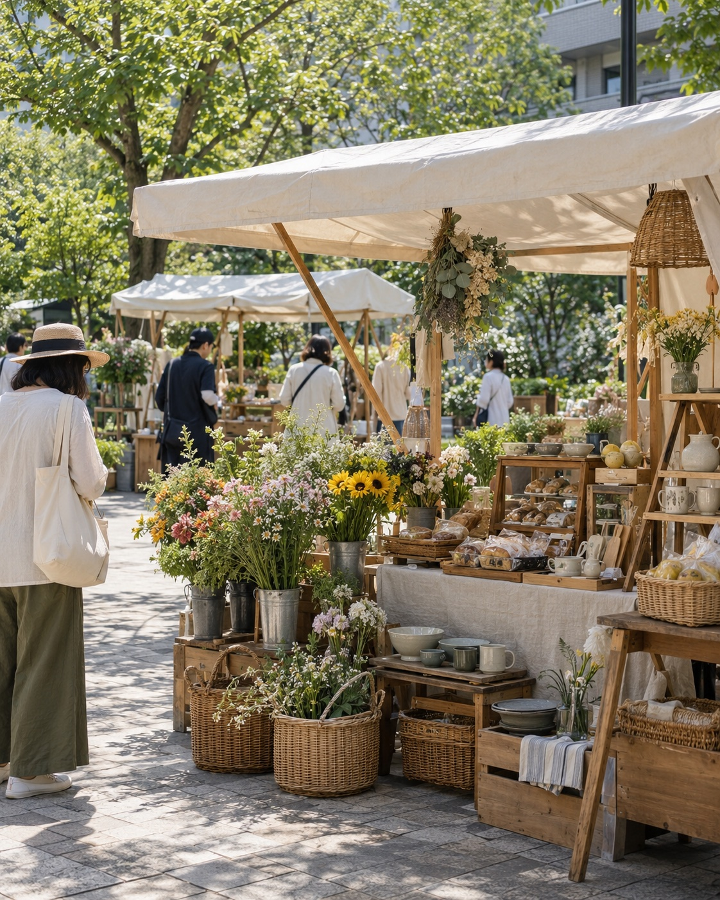
イラストに変換
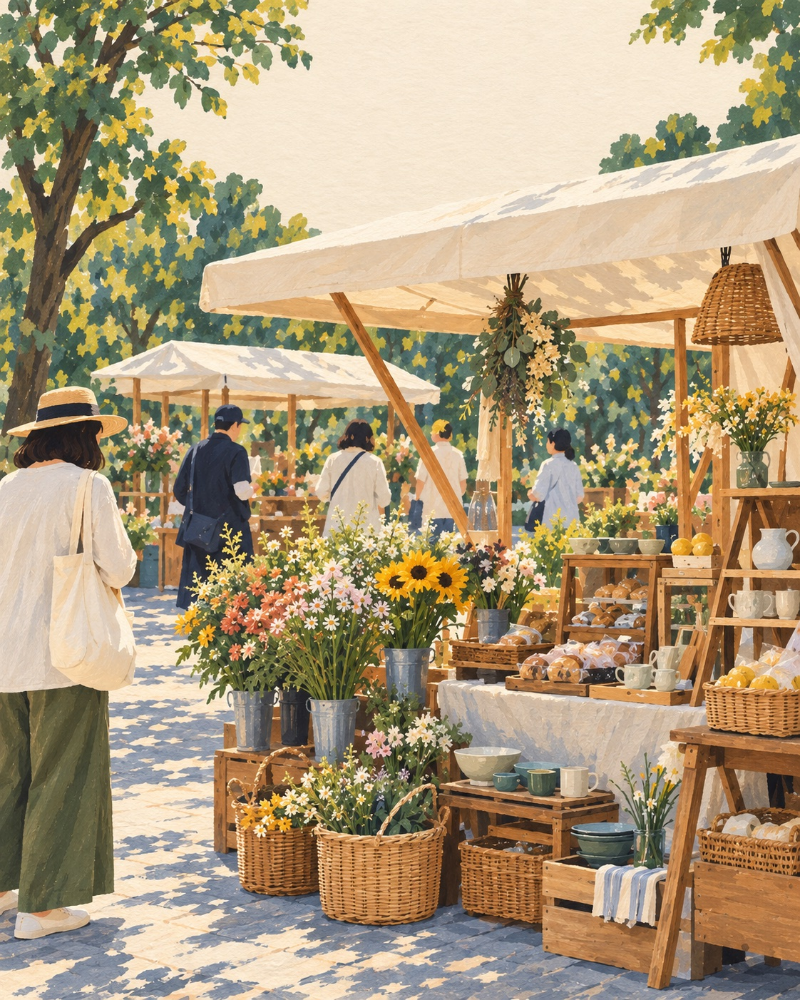
デザインに活用
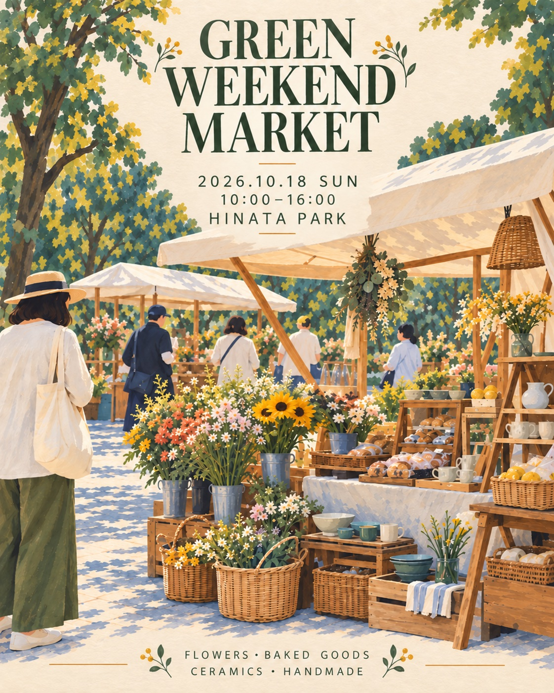
STEP A写真をガッシュ風イラストにする
使い方を選んでください
とにかく簡単に試したい方 → 完全おまかせ版
色や雰囲気などを自分で決めたい方 → カスタマイズ版
迷ったらこちら
完全おまかせ版
画像と一緒に、そのまま送るだけ
アップロードした写真を、温かみのあるガッシュ・不透明水彩風のエディトリアルイラストへ変換してください。 アップロードした写真の主役、構図、色、雰囲気、残すべき要素を分析し、このイラストテイストに最も合う仕上がりを判断してください。 背景の残し方と画像比率も、素材として使いやすい形を選んでください。 利用者への質問や確認は行わず、そのまま制作を開始してください。 【作成ルール】 写真の構図、主な被写体、人物の人数、位置関係、会場の特徴を可能な限り維持してください。 不透明水彩を重ねたようなマットな色面、筆の跡、柔らかな紙の質感を表現してください。 細部を写実的に描き込みすぎず、光、季節、空気感が伝わるよう整理してください。 自然な明るさと落ち着いた色調で、上品な絵本やライフスタイル誌の挿絵のように仕上げてください。 人物の顔は細かく描き込みすぎず、自然な後ろ姿や横顔として表現してください。 被写体、商品、人物を勝手に追加・削除しないでください。 写真風、3D風、アニメ風、輪郭の強いポップアート、派手な彩度は避けてください。 文字、ロゴ、署名、透かしは入れないでください。
好みに合わせたい方へ
カスタマイズ版
希望する項目だけ入力すればOK
すべての項目を埋める必要はありません。空欄の項目は、ChatGPTが画像の内容から判断します。
アップロードした写真を、温かみのあるガッシュ・不透明水彩風のエディトリアルイラストへ変換してください。 【入力項目】 使用目的： （例：イベントフライヤー／SNS投稿／地域情報誌） 希望する雰囲気： （例：明るい／落ち着いた／ノスタルジック／おまかせ） 希望する季節感： （例：春／初夏／秋／指定なし） 残したい人物・建物・商品・植物： （例：出店者／テント／花や野菜／会場全体） 簡略化してよい要素： （例：背景の建物／通行人／なし／おまかせ） 画像比率： （例：縦4:5／正方形1:1／横16:9／元画像と同じ） 未入力の項目は、アップロードした写真の内容と使用目的から判断してください。 入力内容について利用者へ確認せず、そのまま制作を開始してください。 【作成ルール】 写真の構図、主な被写体、人物の人数、位置関係、会場の特徴を可能な限り維持してください。 不透明水彩を重ねたようなマットな色面、筆の跡、柔らかな紙の質感を表現してください。 細部を写実的に描き込みすぎず、光、季節、空気感が伝わるよう整理してください。 自然な明るさと落ち着いた色調で、上品な絵本やライフスタイル誌の挿絵のように仕上げてください。 人物の顔は細かく描き込みすぎず、自然な後ろ姿や横顔として表現してください。 被写体、商品、人物を勝手に追加・削除しないでください。 写真風、3D風、アニメ風、輪郭の強いポップアート、派手な彩度は避けてください。 文字、ロゴ、署名、透かしは入れないでください。
STEP Bイラストをイベントフライヤーにする
使い方を選んでください
とにかく簡単に試したい方 → 完全おまかせ版
色や雰囲気などを自分で決めたい方 → カスタマイズ版
迷ったらこちら
完全おまかせ版
画像と一緒に、そのまま送るだけ
アップロードしたイラストをメインビジュアルとして使用し、イベントを告知する高品質なフライヤーを作成してください。 アップロードしたイラストの内容、色、雰囲気、想定される用途を分析し、最も適したデザイン、構図、タイトル、短いコピー、架空の名称を作成してください。 文字数はできるだけ少なくしてください。 実在する企業、店舗、イベント、ブランドと混同されない架空の内容にしてください。 利用者への質問や確認は行わず、そのまま制作を開始してください。 ・AIがイベントのテーマ、架空のイベント名、日時、会場名を作成する ・架空情報であることが分かる一般的な名称を使う ・情報量を増やしすぎない 【作成ルール】 元イラストの構図、主役、色、描画テイストを維持してください。 イベント名を最も大きく、開催日、時間、会場を次に読みやすく配置してください。 情報量を絞り、スマートフォンでも日時と場所が一目で分かる文字階層にしてください。 イラストの余白を文字配置に活用し、人物や商品の上へ大量の文字を重ねないでください。 元イラストから色を抽出し、自然で統一感のある配色にしてください。 地域のマルシェ、アートイベント、ライフスタイルイベントに合う、上品で親しみやすいエディトリアルデザインにしてください。 意味不明な文字、架空の住所や価格、実在ロゴ、過剰な装飾、スーパーのチラシ風表現、壁や額縁のモックアップは避けてください。 フライヤー単体を正面から見た状態で出力してください。
完全おまかせ版で生成される店舗名、会社名、イベント名、日時、場所などは架空です。実際の告知や仕事で使用する場合は、カスタマイズ版へ正しい情報を入力してください。
好みに合わせたい方へ
カスタマイズ版
希望する項目だけ入力すればOK
すべての項目を埋める必要はありません。空欄の項目は、ChatGPTが画像の内容から判断します。
アップロードしたイラストをメインビジュアルとして使用し、イベントを告知する高品質なフライヤーを作成してください。 【掲載したい情報】 イベント名： 開催日・時間： 会場名： 内容・出店ジャンル：（未入力可） 希望する雰囲気：（未入力可／おまかせ可） 未入力の項目は、イラストの内容から判断してください。 実際に使用する場合は、イベント名、日時、会場名を正確に入力してください。 【作成ルール】 元イラストの構図、主役、色、描画テイストを維持してください。 イベント名を最も大きく、開催日、時間、会場を次に読みやすく配置してください。 情報量を絞り、スマートフォンでも日時と場所が一目で分かる文字階層にしてください。 イラストの余白を文字配置に活用し、人物や商品の上へ大量の文字を重ねないでください。 元イラストから色を抽出し、自然で統一感のある配色にしてください。 地域のマルシェ、アートイベント、ライフスタイルイベントに合う、上品で親しみやすいエディトリアルデザインにしてください。 入力した文字だけを正確に使用してください。 意味不明な文字、架空の住所や価格、実在ロゴ、過剰な装飾、スーパーのチラシ風表現、壁や額縁のモックアップは避けてください。 フライヤー単体を正面から見た状態で出力してください。
03
不動産や住宅紹介に
建築模型のようなミニチュア3Dイラスト
住宅や店舗の室内写真を、斜め上から眺める建築模型のようなミニチュアへ。 間取りや暮らし方を感覚的に伝えたい、不動産・建築・インテリア分野に向いています。
元の写真
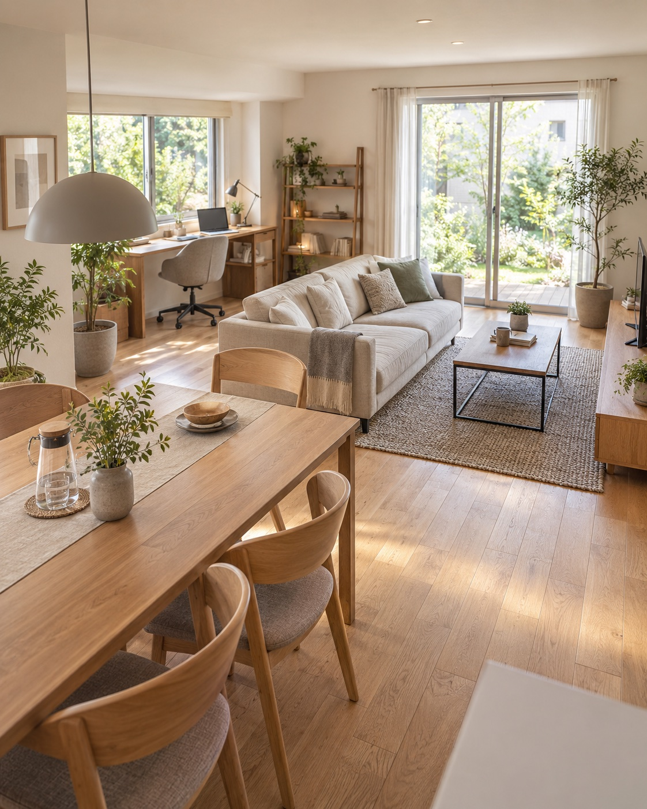
イラストに変換
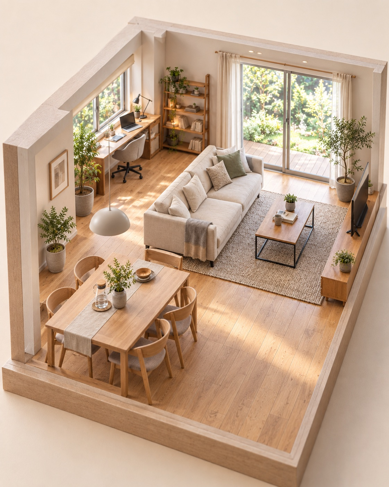
デザインに活用
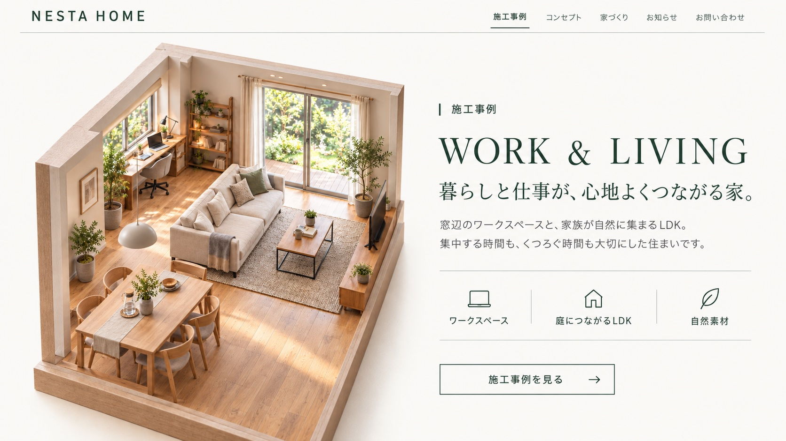
STEP A写真を建築ミニチュアにする
使い方を選んでください
とにかく簡単に試したい方 → 完全おまかせ版
色や雰囲気などを自分で決めたい方 → カスタマイズ版
迷ったらこちら
完全おまかせ版
画像と一緒に、そのまま送るだけ
アップロードした建物または室内の写真を、紙の模型やアイソメトリックな建築模型のような、精巧なミニチュア3Dイラストへ変換してください。 アップロードした写真の主役、構図、色、雰囲気、残すべき要素を分析し、このイラストテイストに最も合う仕上がりを判断してください。 背景の残し方と画像比率も、素材として使いやすい形を選んでください。 利用者への質問や確認は行わず、そのまま制作を開始してください。 【作成ルール】 元写真の間取り、家具、窓、扉、設備の位置関係を可能な限り維持してください。 空間全体が見渡せるよう、壁の一部を取り除いたドールハウス型の構図にしてください。 斜め上から見下ろすアイソメトリックまたは建築模型の視点で表現してください。 木、紙、布、石などの質感を精密に表現しながら、実在の部屋ではなく模型として認識できる仕上がりにしてください。 柔らかな自然光、穏やかな影、ニュートラルな背景を使用してください。 家具や間取りを勝手に大きく変更したり、元写真にない部屋や人物を追加したりしないでください。 通常の室内写真、単なるジオラマ風フィルター、ゲーム画面、過度にデフォルメした玩具風表現は避けてください。 文字、ロゴ、署名、透かしは入れないでください。
好みに合わせたい方へ
カスタマイズ版
希望する項目だけ入力すればOK
すべての項目を埋める必要はありません。空欄の項目は、ChatGPTが画像の内容から判断します。
アップロードした建物または室内の写真を、紙の模型やアイソメトリックな建築模型のような、精巧なミニチュア3Dイラストへ変換してください。 【入力項目】 使用目的： （例：不動産ホームページ／賃貸物件の紹介／リノベーション事例） 建物・空間の種類： （例：リビングダイニング／店舗／オフィス／マンション一室） 残したい家具・設備・特徴： （例：ソファ／デスク／観葉植物／窓からの景色） 希望する素材感： （例：木とファブリック中心／ナチュラル／モダン／おまかせ） 希望する雰囲気： （例：明るい／落ち着いた／北欧風／おまかせ） 画像比率： （例：正方形1:1／横16:9／元画像と同じ） 未入力の項目は、アップロードした写真の内容と使用目的から判断してください。 入力内容について利用者へ確認せず、そのまま制作を開始してください。 【作成ルール】 元写真の間取り、家具、窓、扉、設備の位置関係を可能な限り維持してください。 空間全体が見渡せるよう、壁の一部を取り除いたドールハウス型の構図にしてください。 斜め上から見下ろすアイソメトリックまたは建築模型の視点で表現してください。 木、紙、布、石などの質感を精密に表現しながら、実在の部屋ではなく模型として認識できる仕上がりにしてください。 柔らかな自然光、穏やかな影、ニュートラルな背景を使用してください。 家具や間取りを勝手に大きく変更したり、元写真にない部屋や人物を追加したりしないでください。 通常の室内写真、単なるジオラマ風フィルター、ゲーム画面、過度にデフォルメした玩具風表現は避けてください。 文字、ロゴ、署名、透かしは入れないでください。
STEP B不動産ホームページのメインビジュアルにする
使い方を選んでください
とにかく簡単に試したい方 → 完全おまかせ版
色や雰囲気などを自分で決めたい方 → カスタマイズ版
迷ったらこちら
完全おまかせ版
画像と一緒に、そのまま送るだけ
アップロードした建築ミニチュアイラストを使用し、架空の不動産・住宅会社のホームページのファーストビューを作成してください。 アップロードしたイラストの内容、色、雰囲気、想定される用途を分析し、最も適したデザイン、構図、タイトル、短いコピー、架空の名称を作成してください。 文字数はできるだけ少なくしてください。 実在する企業、店舗、イベント、ブランドと混同されない架空の内容にしてください。 利用者への質問や確認は行わず、そのまま制作を開始してください。 ・AIが架空の会社名、短いメインコピー、サブコピー、必要最小限のメニュー名を作成する ・住所、電話番号、価格、物件番号は追加しない 【作成ルール】 ミニチュアイラストを大きく使用し、建物や空間の特徴が隠れないようにしてください。 会社名、メインコピー、問い合わせ導線が一目で分かる、信頼感のある構成にしてください。 白、アイボリー、木の色、落ち着いたグリーンを基本に、余白の多い上品なデザインにしてください。 不動産会社、注文住宅、リノベーション会社に合う、現代的で親しみやすいWebデザインにしてください。 元イラストを描き直したり、写真へ戻したりしないでください。 スマートフォンやPC本体のモックアップではなく、Webページそのものを正面から表示してください。 実在企業のロゴ、透かし、広告、ブラウザの不要なUIは入れないでください。
完全おまかせ版で生成される店舗名、会社名、イベント名、日時、場所などは架空です。実際の告知や仕事で使用する場合は、カスタマイズ版へ正しい情報を入力してください。
好みに合わせたい方へ
カスタマイズ版
希望する項目だけ入力すればOK
すべての項目を埋める必要はありません。空欄の項目は、ChatGPTが画像の内容から判断します。
アップロードした建築ミニチュアイラストを使用し、架空の不動産・住宅会社のホームページのファーストビューを作成してください。 【掲載したい文字】 会社名： メインコピー： サブコピー：（未入力可） ボタン文言： （例：物件を見る／相談する／おまかせ） 希望する雰囲気：（未入力可／おまかせ可） 未入力の項目は、イラストの内容から判断してください。 【作成ルール】 ミニチュアイラストを大きく使用し、建物や空間の特徴が隠れないようにしてください。 会社名、メインコピー、問い合わせ導線が一目で分かる、信頼感のある構成にしてください。 白、アイボリー、木の色、落ち着いたグリーンを基本に、余白の多い上品なデザインにしてください。 不動産会社、注文住宅、リノベーション会社に合う、現代的で親しみやすいWebデザインにしてください。 入力した文字だけを正確に使用し、意味不明な文字や不要な物件情報を追加しないでください。 元イラストを描き直したり、写真へ戻したりしないでください。 スマートフォンやPC本体のモックアップではなく、Webページそのものを正面から表示してください。 実在企業のロゴ、透かし、広告、ブラウザの不要なUIは入れないでください。
04
ブログや発信の素材に
繊細な線画＋淡い水彩イラスト
人物写真を、海外のライフスタイル誌のような線画と淡い水彩のイラストへ。 本人らしさと柔らかな空気感を残しながら、ブログやサービス紹介に使いやすい素材にできます。
元の写真
イラストに変換
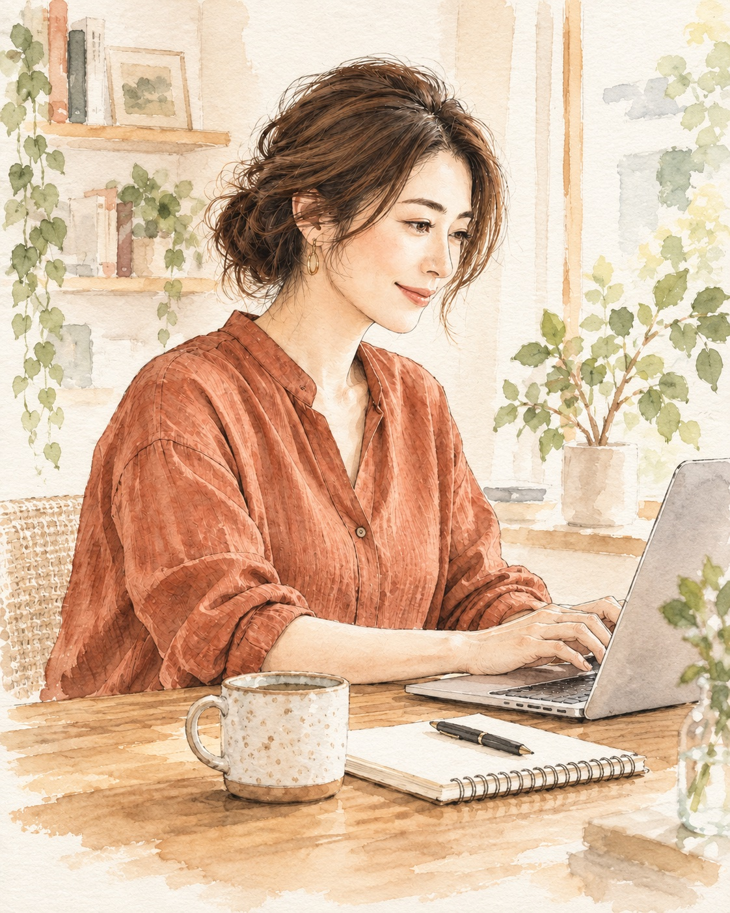
デザインに活用
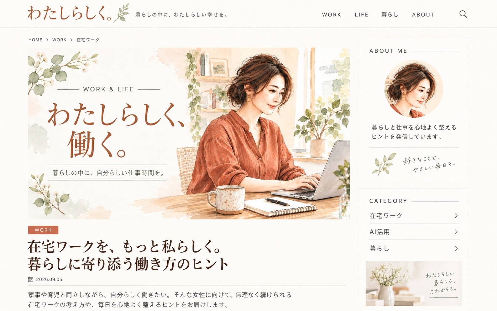
STEP A人物写真を線画＋水彩にする
使い方を選んでください
とにかく簡単に試したい方 → 完全おまかせ版
色や雰囲気などを自分で決めたい方 → カスタマイズ版
迷ったらこちら
完全おまかせ版
画像と一緒に、そのまま送るだけ
アップロードした人物写真を、海外のファッション誌やライフスタイル誌に使われるような、繊細な線画＋淡い水彩のエディトリアルイラストへ変換してください。 アップロードした写真の主役、構図、色、雰囲気、残すべき要素を分析し、このイラストテイストに最も合う仕上がりを判断してください。 背景の残し方と画像比率も、素材として使いやすい形を選んでください。 利用者への質問や確認は行わず、そのまま制作を開始してください。 【作成ルール】 人物の顔立ち、年代、髪型、表情、服装、姿勢を可能な限り維持してください。 顔を過度に若くしたり、美化しすぎたり、別人に変更したりしないでください。 細く繊細な鉛筆またはインクの線と、透明感のある淡い水彩を組み合わせてください。 肌、髪、服は自然で上品な色合いにし、白い余白と紙の質感を生かしてください。 背景は人物と使用目的に必要な要素を残し、主役が引き立つよう簡略化してください。 写真風、3D風、アニメ風、太い輪郭線、過度にかわいい表現、強すぎる彩度は避けてください。 人物、手、小物の数を勝手に変更しないでください。 文字、ロゴ、署名、透かしは入れないでください。
好みに合わせたい方へ
カスタマイズ版
希望する項目だけ入力すればOK
すべての項目を埋める必要はありません。空欄の項目は、ChatGPTが画像の内容から判断します。
アップロードした人物写真を、海外のファッション誌やライフスタイル誌に使われるような、繊細な線画＋淡い水彩のエディトリアルイラストへ変換してください。 【入力項目】 使用目的： （例：ブログのプロフィール／SNSアイコン／サービス紹介ページ） 希望する雰囲気： （例：上品／ナチュラル／落ち着いた／親しみやすい） 希望する配色： （例：淡いピンクベージュ／モノトーン＋差し色／写真から抽出／おまかせ） 残したい人物の特徴： （例：髪型／表情／服装の色） 残したい服装・ポーズ・小物： （例：現在の服装のまま／PC作業のポーズ／マグカップ） 背景： （残す／簡略化／おまかせ） 画像比率： （例：縦4:5／正方形1:1／元画像と同じ） 未入力の項目は、アップロードした写真の内容と使用目的から判断してください。 入力内容について利用者へ確認せず、そのまま制作を開始してください。 【作成ルール】 人物の顔立ち、年代、髪型、表情、服装、姿勢を可能な限り維持してください。 顔を過度に若くしたり、美化しすぎたり、別人に変更したりしないでください。 細く繊細な鉛筆またはインクの線と、透明感のある淡い水彩を組み合わせてください。 肌、髪、服は自然で上品な色合いにし、白い余白と紙の質感を生かしてください。 背景は人物と使用目的に必要な要素を残し、主役が引き立つよう簡略化してください。 写真風、3D風、アニメ風、太い輪郭線、過度にかわいい表現、強すぎる彩度は避けてください。 人物、手、小物の数を勝手に変更しないでください。 文字、ロゴ、署名、透かしは入れないでください。
STEP Bブログのアイキャッチにする
使い方を選んでください
とにかく簡単に試したい方 → 完全おまかせ版
色や雰囲気などを自分で決めたい方 → カスタマイズ版
迷ったらこちら
完全おまかせ版
画像と一緒に、そのまま送るだけ
アップロードしたイラストを使用し、ブログ記事に使用する横長のアイキャッチ画像を作成してください。 アップロードしたイラストの内容、色、雰囲気、想定される用途を分析し、最も適したデザイン、構図、タイトル、短いコピー、架空の名称を作成してください。 文字数はできるだけ少なくしてください。 実在する企業、店舗、イベント、ブランドと混同されない架空の内容にしてください。 利用者への質問や確認は行わず、そのまま制作を開始してください。 ・AIがイラストの内容から記事テーマを判断し、短いカテゴリー、記事タイトル、サブコピーを作成する ・日付、著者名、本文、SNS情報は追加しない 【作成ルール】 完成したWebページやブラウザ画面ではなく、記事一覧や記事冒頭に配置するアイキャッチ画像単体として出力してください。 イラストを片側へ大きく配置し、反対側にタイトル用の余白を確保してください。 人物の顔、表情、服装、ポーズ、元イラストの線と水彩のタッチを維持してください。 記事タイトルを最も大きく、カテゴリーとサブコピーを補助的に配置してください。 スマートフォンの小さなサムネイルでも、人物とタイトルが一目で認識できる構成にしてください。 元イラストから色を抽出し、余白のある上品なエディトリアルデザインにしてください。 ナビゲーション、記事本文、ボタン、広告、SNSアイコン、ブラウザ枠、端末のモックアップは入れないでください。 写真風、3D風、人物の描き直し、意味不明な文字、実在ロゴ、署名、透かしは避けてください。
完全おまかせ版で生成される店舗名、会社名、イベント名、日時、場所などは架空です。実際の告知や仕事で使用する場合は、カスタマイズ版へ正しい情報を入力してください。
好みに合わせたい方へ
カスタマイズ版
希望する項目だけ入力すればOK
すべての項目を埋める必要はありません。空欄の項目は、ChatGPTが画像の内容から判断します。
アップロードしたイラストを使用し、ブログ記事に使用する横長のアイキャッチ画像を作成してください。 【掲載したい文字】 記事タイトル： カテゴリー：（未入力可／おまかせ可） サブコピー：（未入力可／なし／おまかせ） 希望する雰囲気：（未入力可／おまかせ可） 未入力の項目は、イラストの内容から判断してください。 【作成ルール】 完成したWebページやブラウザ画面ではなく、記事一覧や記事冒頭に配置するアイキャッチ画像単体として出力してください。 イラストを片側へ大きく配置し、反対側にタイトル用の余白を確保してください。 人物の顔、表情、服装、ポーズ、元イラストの線と水彩のタッチを維持してください。 記事タイトルを最も大きく、カテゴリーとサブコピーを補助的に配置してください。 スマートフォンの小さなサムネイルでも、人物とタイトルが一目で認識できる構成にしてください。 元イラストから色を抽出し、余白のある上品なエディトリアルデザインにしてください。 入力した文字だけを正確に使用してください。 ナビゲーション、記事本文、ボタン、広告、SNSアイコン、ブラウザ枠、端末のモックアップは入れないでください。 写真風、3D風、人物の描き直し、意味不明な文字、実在ロゴ、署名、透かしは避けてください。
うまく作るための共通ポイント
- 元写真は、主役がはっきり見えるものを選ぶ
- 残したい要素を具体的に書く
- 写真からイラスト、イラストからデザインの2段階で作る
- 文字は短く、使用する文言を指定する
- 一度で完璧を目指さず、変更箇所だけを追加で指示する
文字が崩れたときの対処法
生成結果を少しだけ直したいときは、次の追加プロンプトを送ってください。
文字だけ直したい場合
画像、イラスト、配色、構図、レイアウトは変更せず、間違っている文字だけを次の正しい表記へ修正してください。 正しい表記： （ここに文字を入力）
元の被写体へ近づけたい場合
全体のイラストテイスト、配色、背景、構図は維持してください。 主役の形、顔立ち、服装、ポーズ、個数、位置関係だけを、アップロードした元写真へさらに近づけてください。 新しい人物や物は追加しないでください。
装飾を減らしたい場合
主役、文字、配色、全体のレイアウトは維持してください。 周囲の装飾を半分程度に減らし、余白を増やしてください。 よりミニマルで上品なデザインに調整してください。
利用時の注意
【ご利用前にご確認ください】
- 画像生成の結果は、使用する写真や生成のたびに変わります。
- 生成AIは、特に小さな文字や日本語を誤って描く場合があります。
- 文字の正確さを最優先する場合は、文字なしの画像を生成し、Canvaなどで文字を追加してください。
- 人物写真を使用する場合は、ご本人の許可を得た写真を使用してください。
- 実在する企業、商品、キャラクター、ロゴを使用する際は、権利や利用規約を確認してください。
- クライアントワークや商用利用では、使用するAIサービスの最新の利用規約をご自身で確認してください。
写真は、撮ったままで終わらせなくて大丈夫。
イラストのテイストを変えたり、ポスターやフライヤー、ホームページ、ブログ素材へ展開したりすることで、ひとつの写真から作れるものは大きく広がります。
まずは気になる作例をひとつ選び、自分の写真で試してみてください。
AIをもっと仕事や暮らしに
活かしてみたい方へ
今回紹介したイラスト活用の方法は、
ChatGPTを仕事に活かす方法のほんの一例です。
写真をデザインへ展開できるようになると、
お店や発信、日々の仕事の中でAIを活かせる場面がどんどん広がっていきます。
AI初心者さん向けに、
AIを仕事に活かす考え方や方法をまとめた
『AIマネタイズの教科書』
も無料でご用意しています。